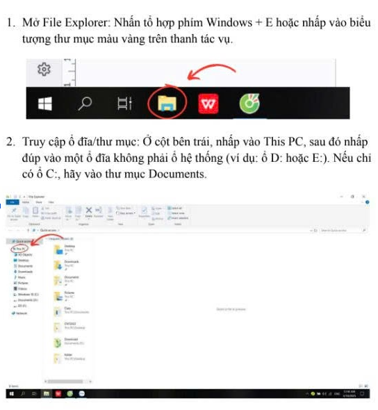
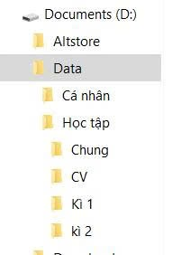
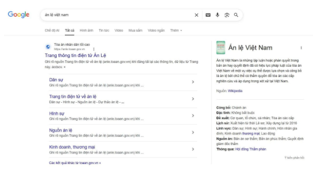
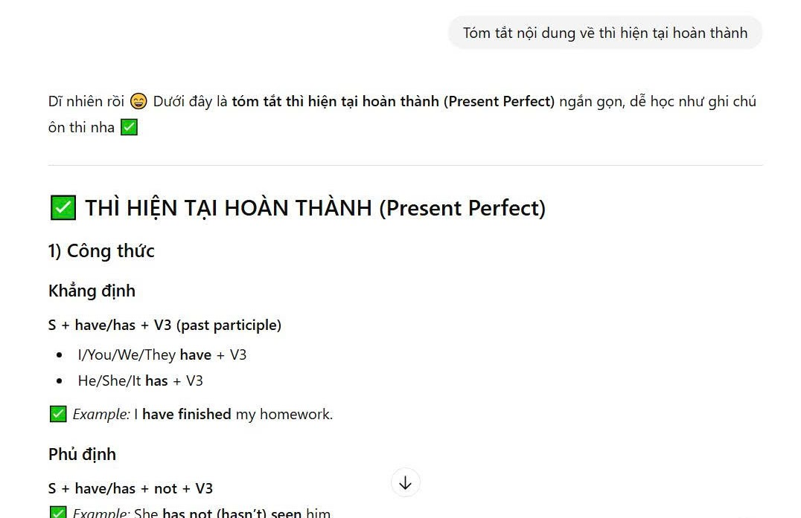
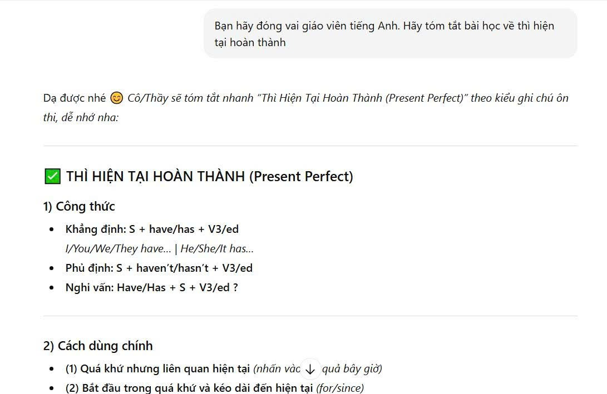
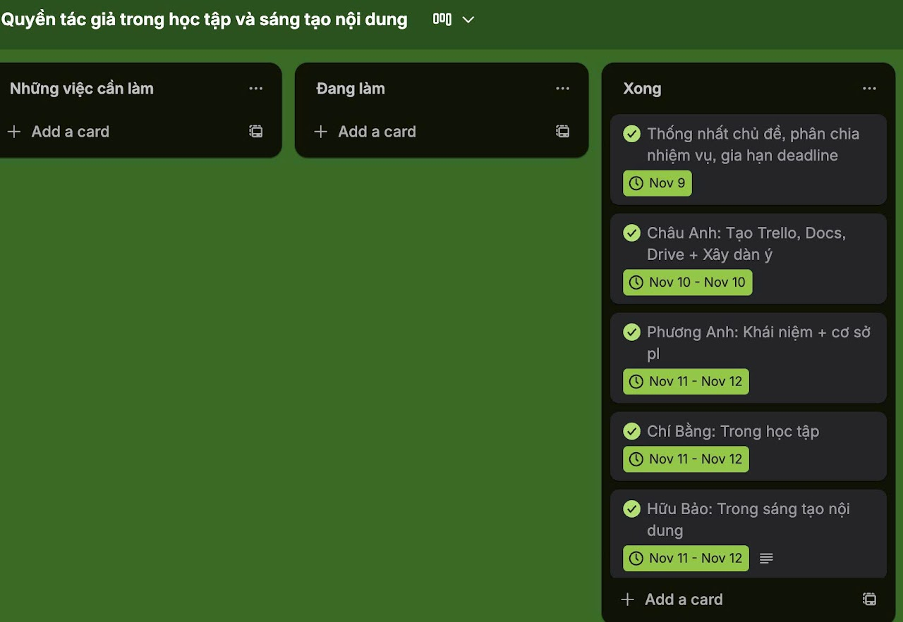
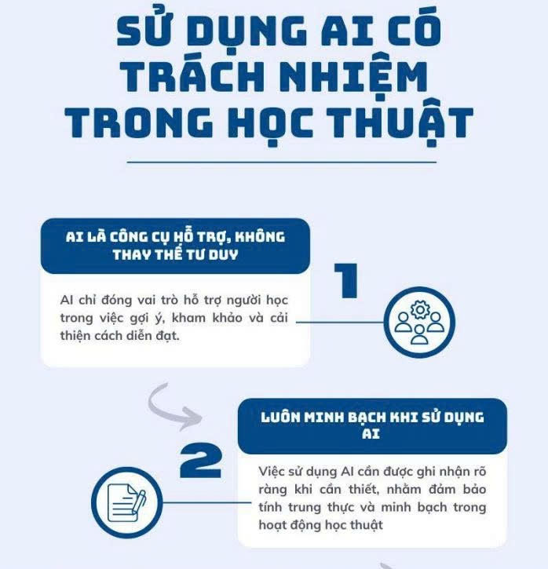

Phạm Thị Bích Loan
Sinh viên Trường Đại học Y dược - Đại học Quốc gia Hà Nội
🎯 Mục tiêu học tập
- Nắm vững những kỹ năng số đã học, biết cách tổ chức công việc và quản lý tài liệu khoa học hơn.
- Rèn khả năng tìm kiếm và đánh giá thông tin một cách chính xác, tránh bị nhiễu bởi những nguồn không đáng tin.
- Sử dụng AI hiệu quả để tiết kiệm thời gian, học tập thông minh hơn và làm bài tốt hơn mà vẫn đảm bảo đúng tinh thần học thuật.
✨ Mục tiêu của Portfolio
- Ghi lại đầy đủ các sản phẩm học tập như hình ảnh, bài viết, prompt, kế hoạch nhóm hay video theo từng bài để thấy rõ sự thay đổi và cải thiện của bản thân qua mỗi bài tập.
- Tập thói quen tự đánh giá, rút kinh nghiệm sau mỗi bài để làm tốt hơn ở những lần sau.
- Biết cách áp dụng kiến thức vào thực tế, để những kỹ năng này không chỉ dùng cho môn học mà còn hữu ích lâu dài, học cách sử dụng AI một cách hợp lý và có trách nhiệm.
Bài 1: Thao tác cơ bản với tệp tin và thư mục
Mục tiêu bài tập: Rèn luyện kỹ năng tạo, đổi tên, sao chép, di chuyển, xóa tệp tin và thư mục một cách thành thạo trên hệ điều hành Windows (có thể điều chỉnh cho macOS/Linux).

Quá trình thực hiện:
- Mở File Explorer: Nhấn tổ hợp phím Windows + E hoặc nhấp vào biểu tượng thư mục màu vàng trên thanh tác vụ.
- Truy cập ổ đĩa/thư mục: Ở cột bên trái, nhấp vào This PC, sau đó nhấp đúp vào một ổ đĩa không phải ổ hệ thống (ví dụ: ổ D: hoặc E:). Nếu chỉ có ổ C:, hãy vào thư mục Documents.
- Tạo thư mục mới: Nhấp chuột phải vào một khoảng trống → chọn New → Folder. Đặt tên thư mục là ThucHanh_hoten_sinhvien (ví dụ: ThucHanh_PhamThiBichLoan). Nhấn Enter.
- Vào thư mục vừa tạo: Nhấp đúp vào thư mục ThucHanh_NguyenVanA.
- Tạo tệp tin văn bản: Nhấp chuột phải vào khoảng trống → New → Text Document. Đặt tên tệp là GhiChu.txt. Nhấn Enter.
- Đổi tên tệp tin: Nhấp chuột phải vào tệp GhiChu.txt → chọn Rename. Đổi tên thành GhiChuQuanTrong.txt. Nhấn Enter.
- Tạo thư mục con: Trong thư mục ThucHanh_PhamThiBichLoan, nhấp chuột phải → New → Folder. Đặt tên là TaiLieu.
- Sao chép tệp tin (Copy & Paste): Nhấp chuột phải vào tệp GhiChuQuanTrong.txt → chọn Copy (hoặc Ctrl + C). Nhấp đúp vào thư mục TaiLieu, nhấp chuột phải vào khoảng trống → chọn Paste (hoặc Ctrl + V).
- Di chuyển tệp tin (Cut & Paste): Quay lại thư mục ThucHanh_PhamThiBichLoan. Tạo một tệp mới tên là DiChuyen.txt. Nhấp chuột phải vào tệp DiChuyen.txt → chọn Cut (hoặc Ctrl + X). Nhấp đúp vào thư mục TaiLieu, nhấp chuột phải vào khoảng trống → chọn Paste (hoặc Ctrl + V).
- Xóa tệp tin: Trong thư mục TaiLieu, nhấp chuột phải vào tệp GhiChuQuanTrong.txt → chọn Delete.
- Xóa vĩnh viễn: Chọn tệp DiChuyen.txt, nhấn giữ phím Shift và nhấn Delete.
- Khôi phục từ Thùng rác: Tìm biểu tượng Recycle Bin trên màn hình chính, nhấp đúp để mở. Tìm tệp GhiChuQuanTrong.txt đã xóa, nhấp chuột phải và chọn Restore.
Kết quả:

Em thiết kế cấu trúc thư mục theo hướng phân loại rõ ràng theo mục đích sử dụng để dễ quản lý và tránh bị lẫn tài liệu. Trong đó, thư mục Data được dùng làm nơi lưu trữ chính, sau đó chia nhỏ thành các nhóm như Cá nhân, Học tập, Chung và CV nhằm tách biệt tài liệu theo từng lĩnh vực cụ thể. Việc phân chia thêm theo Kỳ 1 và Kỳ 2 giúp em sắp xếp bài tập, tài liệu môn học theo từng giai đoạn học tập, thuận tiện cho việc tìm lại khi ôn thi hoặc tổng hợp. Cách tổ chức này giúp tiết kiệm thời gian, hạn chế thất lạc file và tạo thói quen làm việc khoa học hơn.
Bài 2: Tìm kiếm và đánh giá thông tin học thuật
Mục tiêu bài tập: Phát triển kỹ năng tìm kiếm và đánh giá thông tin học thuật từ các nguồn đáng tin cậy.

Quá trình thực hiện:
1. Chọn một chủ đề liên quan đến ngành học: Em chọn chủ đề “Án lệ Việt Nam – vai trò và thực tiễn áp dụng trong hệ thống pháp luật” vì án lệ được thừa nhận từ năm 2016 và đang có ảnh hưởng ngày càng rõ trong hoạt động xét xử tại Việt Nam.
2. Thực hiện tìm kiếm thông tin từ các nguồn sau: Cơ sở dữ liệu học thuật (Google Scholar, Microsoft Academic, CSDL của thư viện trường), Tạp chí khoa học chuyên ngành, Sách chuyên khảo, Các nguồn mở trên internet.
⇒ Em tìm tài liệu từ 4 nhóm nguồn bắt buộc gồm: cơ sở dữ liệu học thuật (Google Scholar), tạp chí chuyên ngành, sách chuyên khảo và nguồn mở trên Internet. Ngoài ra, em bổ sung thêm cổng thông tin chính thức của TANDTC và các báo cáo chính sách/nhà nước để tăng tính thực tiễn.
3. Thu thập ít nhất 10 tài liệu tham khảo liên quan đến chủ đề đã chọn (bao gồm ít nhất 5 bài báo khoa học): Em thu thập 10 nguồn tài liệu về án lệ Việt Nam trong giai đoạn 2015–2025, bao gồm bài báo khoa học, sách chuyên khảo, báo cáo và nguồn mở chính thống; trong đó có các bài nghiên cứu học thuật tiêu biểu như Nguyễn Văn Cường (2018), Trần Thị Hiền (2020), Lê Mai Anh (2021).
4. Đánh giá độ tin cậy của mỗi nguồn thông tin dựa trên các tiêu chí: tác giả, cơ quan xuất bản, phương pháp nghiên cứu, trích dẫn, tính cập nhật. ⇒ Khi tìm trên Google Scholar, em ưu tiên các bài có chỉ số trích dẫn cao và xuất bản trên tạp chí có phản biện.
5. Tạo bảng tổng hợp các nguồn thông tin với các chi tiết cần thiết: Em lập bảng tổng hợp 10 nguồn theo các trường thông tin: tác giả/cơ quan, năm, loại nguồn, tiêu chí nổi bật và mức độ tin cậy (1–5) để dễ so sánh và lựa chọn nguồn phù hợp cho nghiên cứu.
Bài 2: Viết prompt hiệu quả cho các tác vụ học tập
Mục tiêu bài tập: Phát triển kỹ năng viết câu lệnh (prompt engineering) để tối ưu kết quả từ AI cho học tập.
| Mức độ | Đặc điểm | Tác vụ 1 (Tóm tắt) | Tác vụ 2 (Giải thích) | Tác vụ 3 (Tạo câu hỏi) |
|---|---|---|---|---|
| Cơ bản | Ngắn gọn, chưa có hướng dẫn chi tiết. | “Tóm tắt nội dung về thì hiện tại hoàn thành.” | “Giải thích khái niệm ẩn dụ trong ngôn ngữ học.” | “Tạo một số câu hỏi ôn tập về từ loại tiếng Việt.” |
| Cải tiến | Có thêm yêu cầu cụ thể về hình thức và độ dài. | “Hãy tóm tắt bài học về thì hiện tại hoàn thành trong tiếng Anh thành 3 gạch đầu dòng, tập trung vào cấu trúc và cách sử dụng.” | “Giải thích khái niệm ẩn dụ trong ngôn ngữ học bằng ngôn ngữ dễ hiểu, kèm 1 ví dụ minh họa.” | “Hãy tạo 5 câu hỏi trắc nghiệm về các từ loại trong tiếng Việt (danh từ, động từ, tính từ), kèm đáp án.” |
| Nâng cao | Áp dụng kỹ thuật role prompting và few-shot example. | “Đóng vai giáo viên tiếng Anh, hãy tóm tắt bài học về thì hiện tại hoàn thành cho học sinh lớp 10. Viết ngắn gọn 3 ý chính và 1 ví dụ minh họa.” | “Đóng vai giảng viên ngôn ngữ học, hãy giải thích khái niệm ẩn dụ một cách sinh động, có ví dụ từ văn học Việt Nam và tiếng Anh để so sánh...” | “Đóng vai giáo viên tiếng Việt, hãy tạo 5 câu hỏi trắc nghiệm và 2 câu hỏi tự luận về từ loại, chia theo độ khó (dễ – trung bình – khó), kèm đáp án.” |
Quá trình thực hiện:
1. Chọn 3 tác vụ học tập phổ biến: Tóm tắt tài liệu, giải thích khái niệm, tạo bộ câu hỏi ôn tập. ⇒ Em chọn các chủ đề cụ thể: Thì hiện tại hoàn thành, Khái niệm ẩn dụ, Từ loại tiếng Việt.
2. Viết 3 phiên bản prompt khác nhau: Prompt cơ bản, prompt cải tiến, và prompt nâng cao sử dụng kỹ thuật nâng cao.
3. Thử nghiệm và so sánh kết quả: Prompt cơ bản kết quả lan man; Prompt cải tiến gọn gàng, đúng trọng tâm; Prompt nâng cao hiệu quả nhất vì có ngữ cảnh, vai trò sinh động.
4. Phân tích lý do: Prompt nâng cao tốt hơn vì có ngữ cảnh vai trò (role prompting), định dạng đầu ra rõ ràng, và ví dụ trực quan.
Kết quả đối chiếu Prompt:
Prompt ban đầu

Prompt ban đầu khá ngắn gọn và dễ viết, giúp AI hiểu được chủ đề cần tóm tắt. Tuy nhiên vì yêu cầu còn chung chung nên kết quả thường trình bày chưa có cấu trúc rõ ràng, đôi lúc dài và thiếu trọng tâm ôn tập. Người học phải tự lọc lại thông tin quan trọng nên chưa thật sự tiện để sử dụng như ghi chú học bài.
Prompt cải tiến

Prompt cải tiến cụ thể hơn và có thêm ngữ cảnh “đóng vai giáo viên”, đồng thời yêu cầu nội dung theo từng mục nên AI trả lời rõ ràng, mạch lạc và đúng trọng tâm hơn. Kết quả ngắn gọn, dễ hiểu, có thể dùng trực tiếp để ôn thi hoặc ghi chú mà không cần chỉnh sửa nhiều. Prompt này giúp tiết kiệm thời gian và cho đầu ra phù hợp hơn với mục tiêu học tập.
Bài 3: Sử dụng công cụ hợp tác trực tuyến trong dự án nhóm
Mục tiêu bài tập: Thành thạo các công cụ hợp tác trực tuyến để quản lý dự án nhóm hiệu quả.
Quá trình thực hiện & Thiết lập:
1. Chọn dự án nhỏ: Nhóm em thảo luận và lựa chọn tạo bài thuyết trình/báo cáo theo chủ đề của nhóm để thực hành kỹ năng hợp tác trực tuyến trong 1 tuần.
2. Lựa chọn công cụ: Trello (Quản lý dự án), Google Docs (Soạn thảo văn bản), Google Drive (Lưu trữ file).
3. Không gian làm việc: Trello tạo bảng "Quyền tác giả trong học tập" gồm 3 cột (Việc cần làm - Đang làm - Xong). Google Docs cấp quyền chỉnh sửa cho tất cả thành viên.
4. Dự án trong 1 tuần: Phân công công việc công bằng trên Trello, cùng viết nội dung trên Docs, lưu trữ tài nguyên tài liệu trên Drive.
| Công cụ | Ưu điểm | Nhược điểm |
|---|---|---|
| Trello | Quản lý tiến độ trực quan, dễ theo dõi; phù hợp cho dự án ngắn hạn. | Phụ thuộc kết nối mạng; cần cập nhật thường xuyên để tránh sai lệch. |
| Google Docs | Hỗ trợ nhiều người chỉnh sửa cùng lúc, tự động lưu, có chức năng bình luận. | Khó kiểm soát nội dung khi chỉnh sửa đồng thời. |
| Google Drive | Lưu trữ tiện lợi, dễ chia sẻ và truy cập trên nhiều thiết bị. | Dung lượng hạn chế với tài khoản miễn phí. |
Kết quả làm việc nhóm trên Trello:

Trong bài tập làm việc nhóm, nhóm em sử dụng Trello để tạo không gian làm việc chung và quản lý tiến độ dự án. Trên Trello, nhóm em thiết kế bảng theo 3 cột chính gồm “Những việc cần làm”, “Đang làm” và “Xong”. Mỗi nhiệm vụ được tạo dưới dạng một card và gắn với tên thành viên phụ trách. Nhờ cách chia này, nhóm em dễ dàng phân công công việc, theo dõi được ai đang làm phần nào và nhiệm vụ nào đã hoàn thành.
Ngoài ra, nhóm em còn sử dụng các chức năng như deadline (ngày đến hạn) và checklist để kiểm soát tiến độ. Khi hoàn thành nhiệm vụ, nhóm chỉ cần kéo card sang cột “Xong” để cập nhật trạng thái. Điều này giúp quá trình làm việc rõ ràng, tránh bị bỏ sót việc và đảm bảo đúng thời hạn. Thông qua Trello, nhóm em phối hợp hiệu quả hơn và dễ thống nhất công việc trong suốt quá trình thực hiện dự án.
Bài 2: Sử dụng AI tạo sinh để hỗ trợ sáng tạo nội dung
Mục tiêu bài tập: Thành thạo việc sử dụng các công cụ AI tạo sinh để hỗ trợ quá trình sáng tạo nội dung số.
Quy trình thực hiện & Phối hợp:
1. Chọn dự án: Em chọn dự án sáng tạo nội dung dạng bài viết blog + infographic với chủ đề “5 dấu hiệu stress ở sinh viên và cách tự chăm sóc tinh thần mỗi ngày”.
2. Sử dụng 3 công cụ AI phối hợp:
- ChatGPT: Lên ý tưởng và viết bài blog theo tone giọng thân thiện cho sinh viên.
- DALL-E 3: Tạo infographic minh hoạ như “5 dấu hiệu stress”, “3 cách ngủ ngon”, “Pomodoro 25–5”.
- Canva AI: Chỉnh bố cục, màu pastel, căn chữ/icon để infographic dễ nhìn và chuyên nghiệp hơn.
Phân tích vai trò của AI trong quá trình sáng tạo:
Ưu điểm học được: Tiết kiệm thời gian lên ý tưởng, viết nội dung và tạo hình minh hoạ nhanh chóng, có hệ thống.
Hạn chế: Nội dung đôi khi cần chỉnh để đúng ngữ cảnh học thuật và tránh sai lệch thông tin; Hình ảnh từ DALL-E 3 thi thoảng bị lỗi font chữ tiếng Việt, cần đưa vào Canva xử lý lại.
Nguyên tắc đạo đức cá nhân: Cần minh bạch khi sử dụng nội dung/hình ảnh do AI tạo ra để tránh hiểu lầm về bản quyền và tránh phụ thuộc quá mức vào AI.
Kết quả thực hiện bài tập:
Trong bài tập này, em thực hiện một dự án sáng tạo nội dung với chủ đề “5 dấu hiệu stress ở sinh viên và cách tự chăm sóc tinh thần mỗi ngày”. Để hoàn thiện sản phẩm, em kết hợp ba công cụ AI tạo sinh gồm ChatGPT (tạo nội dung), DALL-E 3 (tạo hình minh hoạ/infographic) và Canva AI (chỉnh sửa thiết kế).
Quy trình thực hiện của em bắt đầu từ việc dùng ChatGPT để lên ý tưởng và viết bài blog theo tone giọng phù hợp với sinh viên, sau đó em đọc lại và chỉnh sửa thủ công để nội dung rõ ràng, tự nhiên hơn. Tiếp theo, em sử dụng DALL-E 3 để tạo các infographic minh họa như “5 dấu hiệu stress”, “3 cách ngủ ngon khi bị stress” và “Pomodoro 25–5”, nhằm giúp thông tin trực quan và dễ nhớ hơn. Tuy nhiên, do DALL-E đôi lúc bị lỗi chữ trên hình, em tiếp tục đưa các sản phẩm vào Canva AI để căn chỉnh bố cục, điều chỉnh màu pastel và làm cho infographic dễ nhìn, chuyên nghiệp hơn.
Nhìn chung, AI đã hỗ trợ em rất nhiều trong việc tiết kiệm thời gian, tạo nội dung nhanh và giúp hình ảnh minh họa đồng bộ theo phong cách. Tuy nhiên, em vẫn cần tham gia vào quá trình kiểm tra, chọn lọc và chỉnh sửa để đảm bảo nội dung phù hợp và đạt chất lượng tốt nhất.
Bài 4: Sử dụng AI có trách nhiệm trong học tập và nghiên cứu
Mục tiêu bài tập: Phát triển kỹ năng sử dụng AI có trách nhiệm và đạo đức trong học tập và nghiên cứu khoa học.

Bộ nguyên tắc cá nhân về sử dụng AI:
- AI chỉ là công cụ hỗ trợ, không thay thế tư duy cá nhân: Em chỉ dùng AI để gợi ý, tham khảo hoặc hỗ trợ diễn đạt, còn nội dung chính vẫn phải do em tự hiểu và tự làm.
- Luôn minh bạch khi có sử dụng AI: Nếu bài làm có sự hỗ trợ từ AI, em sẽ ghi rõ mình đã dùng AI ở phần nào và dùng để làm gì, nhằm đảm bảo trung thực học thuật.
- Chỉ sử dụng AI trong phạm vi được phép theo quy định: Em sẽ tuân thủ các quy định/định hướng của nhà trường và giảng viên, không dùng AI trong những phần bị cấm (như làm bài thay trong kiểm tra, thi cử...).
- Chịu trách nhiệm hoàn toàn về nội dung nộp: Dù AI có hỗ trợ, em vẫn là người chịu trách nhiệm về độ chính xác và chất lượng của bài làm; AI không thể thay em chịu trách nhiệm học thuật.
- Kiểm tra – chỉnh sửa – cá nhân hóa mọi đầu ra của AI: Em không sao chép nguyên văn câu trả lời của AI, mà sẽ kiểm chứng, chỉnh sửa lại theo cách hiểu của mình và bổ sung lập luận để bài có tính cá nhân. Tôn trọng quyền sở hữu trí tuệ và trích dẫn đầy đủ.
- Không lạm dụng AI để tránh phụ thuộc: Duy trì tư duy phản biện và rèn kỹ năng viết tự thân độc lập.
Personal reflection after completing the Projects
Trong quá trình làm Portfolio, điều khiến em áp lực nhất lúc đầu là làm sao để liên kết tất cả các bài tập thành một sản phẩm thống nhất. Vì mỗi bài có yêu cầu khác nhau nên em khá dễ bị rối, phải chỉnh sửa bố cục nhiều lần để Portfolio nhìn gọn gàng và mạch lạc hơn.
Dần dần, em nhận ra đây không chỉ là một bài nộp mà là một quá trình học thật sự. Những việc tưởng nhỏ như quản lý tệp, lưu tài liệu hay ghi nguồn tham khảo lại giúp em hình thành thói quen làm việc có tổ chức và cẩn thận hơn. Em cũng học được cách tìm kiếm thông tin học thuật hiệu quả và biết đánh giá độ tin cậy của nguồn.
Phần em thích nhất là sử dụng AI và viết prompt. Em hiểu rằng muốn AI hỗ trợ tốt thì mình phải đặt câu hỏi rõ ràng, có mục tiêu và biết kiểm tra lại kết quả. Kết thúc dự án, em thấy bản thân tiến bộ hơn cả về kỹ năng số lẫn cách học: chủ động hơn, biết tự đánh giá và cải thiện từng bước. Portfolio vì vậy không chỉ là sản phẩm cuối cùng mà còn là dấu mốc ghi lại quá trình em phát triển.
📞 Contact Me
Số điện thoại: 0886105696
Email: ploann2007@gmail.com